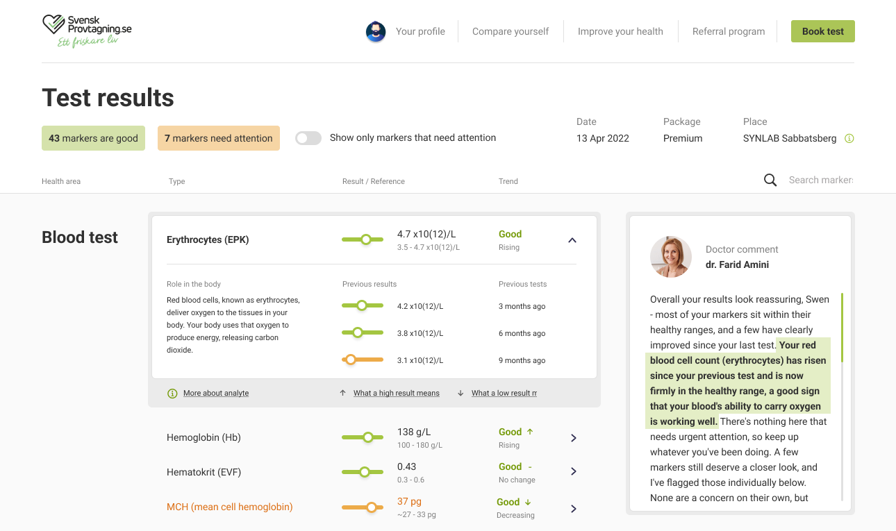
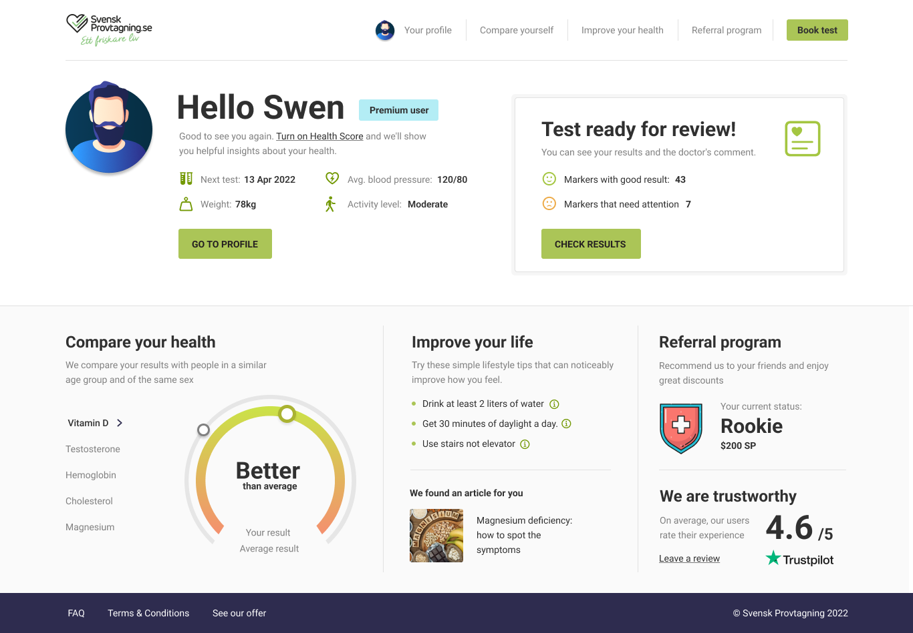
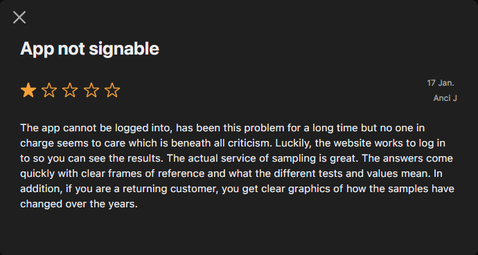
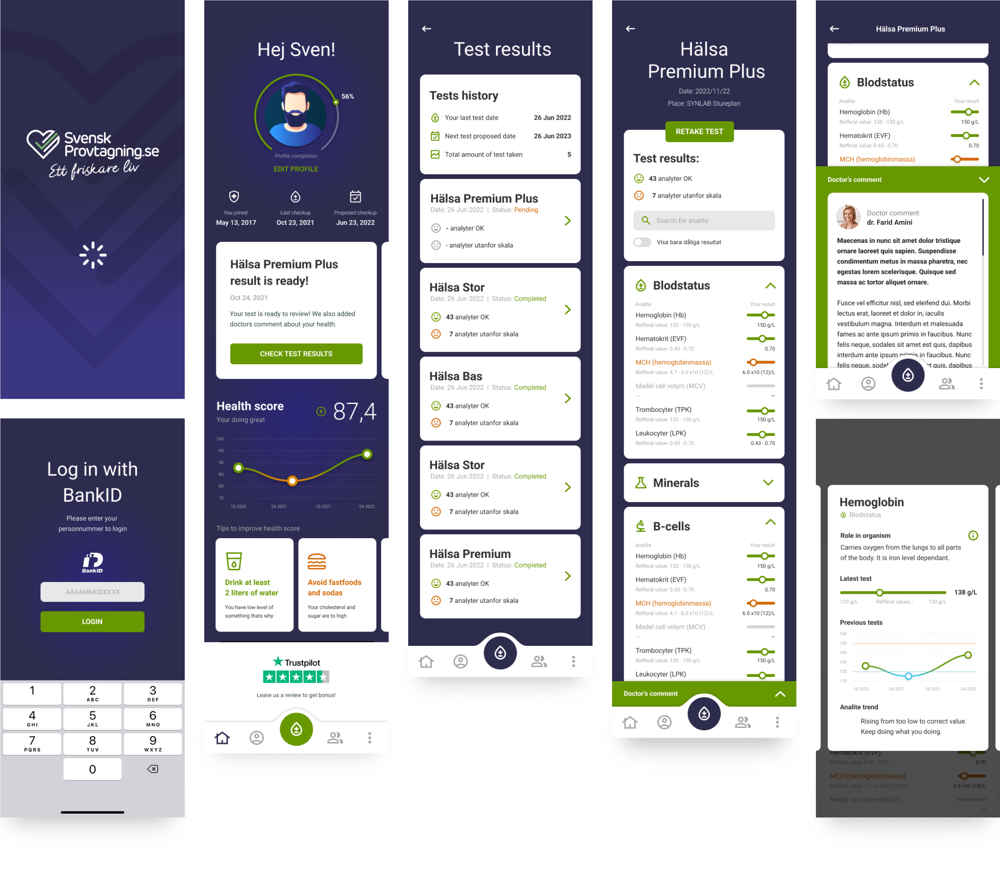

Consumer health · Web + mobile app · 2022
Blood tests
anyone can
read
The Problem
Svensk Provtagning lets people order their own blood tests - no referral, no clinic visit to interpret the outcome. That independence was also the problem: users are not clinicians, yet they were handed hormones, organ-function markers, immune markers and blood fats to make sense of on their own. The service already worked. Comprehension didn't.
The Decision
The app had to interpret, not just display. A results screen that only shows values in a range is technically correct and practically useless to someone who doesn't know what the unit means. I redesigned the experience around three things that turn data into understanding: position against a reference range, history, and a human voice.
Where the redesign did the most work
The Results
Experience
Every marker is shown as a value positioned against its reference range and colour-coded, so you can read your status without knowing what the unit means. On top of that I added the two things that turn data into understanding: history, and a human voice.
From a raw marker to
a result you can act on
The results view is where someone decides whether to worry. It opens with a verdict before a single number, then lets you go as deep as you want.
- Triage in seconds - “43 good · 7 need attention” before any individual value
- Value in range, not raw digits - a colour-coded slider; no need to know the unit
- Plain-language meaning - “role in the body” instead of clinical shorthand
- History - one value becomes a trend
- Doctor's comment - plain words, pointing at the exact marker

Not just numbers
- orientation, guidance
and trust
Results are only half the job. The post-login home turns a set of numbers into something people can use, and it carries the part that numbers can't: confidence.
- Health Score, peer-compared - one read tells you where you stand for your age and sex
- Actionable next steps - “improve your health” turns results into habits, not a diagnosis
- Trust and social proof - rating and reviews reassure people that what they're reading can be trusted
- A clear next action - “test ready for review” surfaces good vs needs-attention the moment you log in

The best review I got
was one star
The app sits at 2.7 on the App Store, dragged down by a login bug that has nothing to do with design. This is from one of the one-star reviews. Halfway through the complaint the reviewer stops and names three things by hand - and all three are decisions from this case. A five-star review tells you someone liked it. This tells you the design worked on someone who was furious.
- “Clear frames of reference” - the range that lets you read a value without knowing the unit
- “What the different tests and values mean” - plain language instead of clinical shorthand
- “Clear graphics of how the samples have changed over the years” - history, turning one value into a trend

Built from scratch, alongside the redesign
The App
Alongside the desktop redesign I designed a native app for iOS and Android from scratch. It brings the essentials to the phone - Health Score, results, history and the doctor's comment - reworked for touch, so people can order tests and check results wherever they are.
Reading your results
on the go
Three principles carried over from the desktop work, and one constraint that didn't exist there: people read these results in waiting rooms, on trains and in bed, not at a desk.
- Approachable - medical results that feel human, not clinical
- Reassuring - clear guidance and plain language keep people calm about their own health
- Focused - only what matters on screen, nothing to decode

Where I'd take it today
The Same Problem,
With AI as an
Interpreter
If I built this today, I'd put AI exactly where the comprehension gap still lives - not a chatbot bolted on, but proactive, plain-language insight on what each result means for you. The design problem hasn't changed: making medical data legible to the people living with it.
- Flags what actually changed - reads the whole panel and surfaces what moved since last time
- Explains it in plain language - what a result means for you, not just a number against a range
- Connects the dots across markers - patterns, not one result in isolation
- Shows its reasoning, always - every insight comes with the “why”, never a black box
- Assists, never replaces - states its confidence and backs the doctor's comment rather than standing in for it
Summary
Outcome
The redesigned results experience and the native app both shipped and are live in Sweden. A service already rated 4.6 on Trustpilot across 1,500+ reviews got an interface people could act on - the trust existed, the comprehension didn't.
How I validated
Sessions with non-clinical users, run in Poland rather than Sweden. The question I was testing - can someone who isn't a clinician read this and know what to do - travels between the two markets, and so do the markers, ranges and units. What doesn't travel is how people relate to their own healthcare system, so I treated the results as evidence about comprehension, not about behaviour. Alongside that: conversations with the board and internal stakeholders, and a review of comparable services.
What I learned
Trust in the service doesn't transfer to trust in the screen. People believed the lab long before they believed they understood the result, and closing that gap wasn't a matter of adding information - it was a matter of deciding what to say first, what to say in plain words, and what to leave to a human.
Somebody opens this alone on a Tuesday evening and decides whether to worry. There's no clinician in the room. That's a different kind of responsibility.